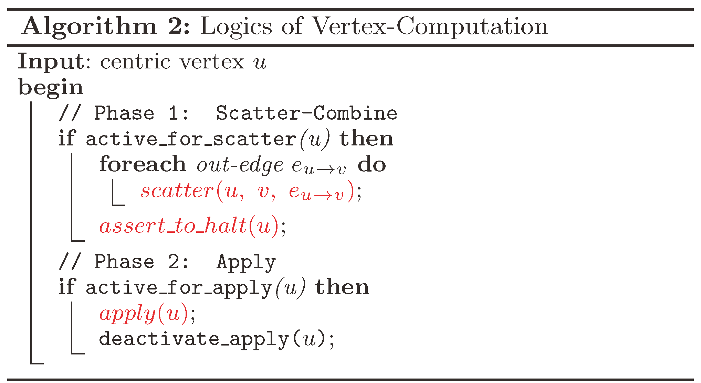
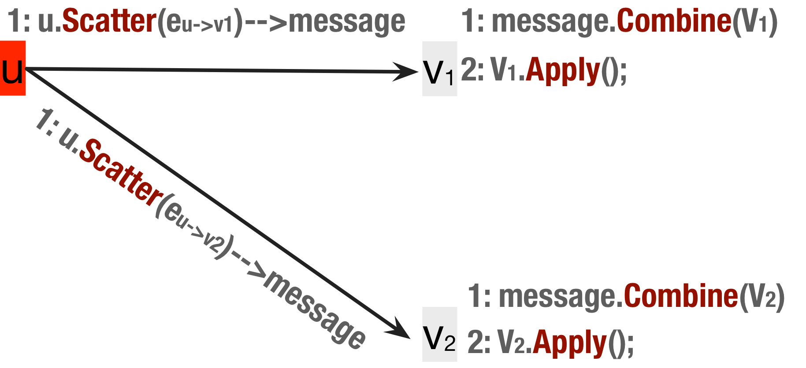
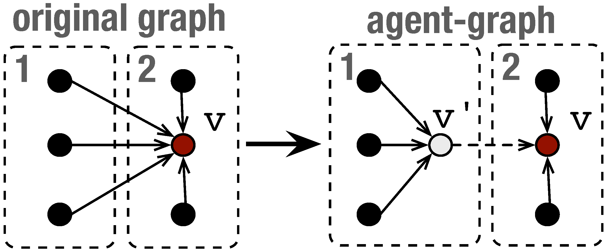
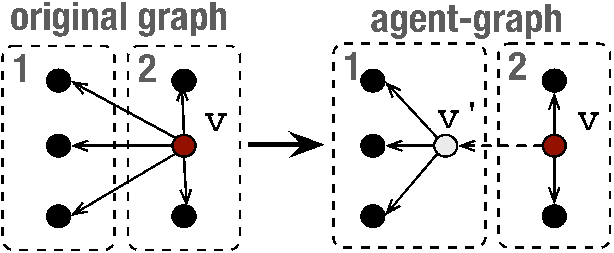

Graph Runtime Engine
fuels emerging large-scale distributed graph-parallel computing
GRE Abstractions
Essentials of GRE are its abstractions on graph-parallel computation and distributed graph representation.
Scatter-Combine Computation Model
Scatter-Combine abstraction inherits the vertex-centric philosophy, and is a data-flow approach based on active message. It realizes the fact that real-world graphs are extracted to model relationship of entities and thus computation is typically driven by signals on edges. In fact, the naming of Scatter-Combine implies an active message on an edge, where Scatter generates a message by source vertex and automatically incurs a Combine on target vertex. The Combine operation is encoded in an active message and can execute automatically on the location of target vertex but without target vertex's involvement.
Scatter-Combine model provides four primitives as user's API. Except the above Scatter and Combine, another basic primitive is Apply that is execute by the host vertex to computes the new vertex state using results accumulated by Combine of its in-edges. For each active message, its Combine operation can optionally trigger an future Apply on the target vertex. Besides, the fourth primitive assert_to_halt is used to keep all vertices active in iterative algorithms such as PageRank.
GRE organizes the overall computation in a Bulk Synchronous Parallel mode, like Pregel. It divides the whole computation into a series of super-steps. During each super-step,logically an vertex alternatively execute the procedure in Algorithm 2 where the scatter function has includes a combine implicitly.


Agent-Graph Data Model
Agent-Graph is proposed for the distributed representation of real-world scale-free graphs. As a consensus, scale-free graphs are hard to partition with traditional methods (either parMetis or Hash), which primarily should be attributed to the power-law degree distribution or namely "big-vertex" problem. Basic idea of Agent-Graph is to crack the big-vertex in the context of message model (Pregel's message passing and GRE's active message), illustrated as the following figures. For the big in-degree remote vertex, we set a local agent called combiner for it. For the big out-degree vertex, we set a remote agent called scatter for it. Following the idea of agent, we further extend the original graph as Agent-Graph model.

Combiner agent

Scatter agent
Agent-Graph is GRE's internal graph representation that only makes sense to underlying runtime, and is transparent to high level algorithms and programmers. Data consistency of agent vertices is automatically maintained by specification of Scatter-Combine computation.
Agent-Graph can be constructed with low "cut" and balanced edge/vertices. Note Agent-Graph has actually changed the original graph topology, and thus no longer belongs to the traditional edge-cut distributed graph model. Essentially, Agent-Graph share the same idea with the vertex-cut in PowerGraph, and can be constructed in a streaming partitioning method with similar greedy heuristics. However, data models of Agent-Graph and PowerGraph's vertex-cut are very different.
One can find a comparison of different graph models from here.